Continuous Flows: Field Traces, RK4 Paths and Numerical Likelihood
Abstract
A density model based on an evolving coordinate system must track both where points move and how their local volume changes. A continuous normalizing flow uses a velocity field for the first calculation and its divergence for the second. This native C++ study starts with an analytically solvable scalar field and a two-coordinate probe example, then preserves the original eight-step RK4 banana experiment, four quarter trajectories, all 48 Adam writes, actual Jacobians and all 1,024 inverse samples. Its fixed-final numerical test NLL is 2.994471788 nats per two-coordinate row, just below the fitting-only full Gaussian's 2.994631823 and above the diagonal Gaussian's 2.993811360 and analytic truth's 2.796480843. The report distinguishes integrated field trace from the actual discrete RK4-map determinant and retains numerical inverse and normalization residuals. This short two-dimensional fit does not establish a repeatable likelihood gain across seeds or a full-image density benchmark.
Evolve coordinates and their local volume together
[Chen, Rubanova, Bettencourt and Duvenaud, Neural Ordinary Differential Equations (2018)](https://arxiv.org/abs/1806.07366) describes continuous-depth models and continuous normalizing flows. Here the trajectory x(t) solves x'=f(x,t), from t=0 to 1. If J(t)=dx(t)/dx(0), then J'=A J with A=df/dx, and the determinant identity gives
A smooth finite tanh field has unique trajectories over this finite interval. The model integrates x'=f and I'=trace(A), then applies a learned positive diagonal scale. With z the final scaled coordinates, its numerical likelihood calculation is
The continuous identity does not make I(1) the exact log determinant of a finite-step RK4 map. We compute both and display their differences. Likewise, reverse RK4 integration approximates the inverse of the continuous flow; it is not an algebraic inverse of the finite forward map. Training differentiates through every unrolled RK4 operation using ordinary reverse mode. This source uses no adaptive solver or constant-memory continuous adjoint.
#include <dm/dm.hpp>
int main(){
std::filesystem::create_directories("build");dm::graphics::Diagram d(28,1150);
dm::graphics::DiagramNodeStyle s;s.width=10;s.height=5;s.font_size=32;
d.node("state",{-24,0},"Coordinates x\nStructural time t",s)
.node("field",{-11,0},"One shared field\n3 -> 8 tanh -> 2",s)
.node("trace",{2,0},"Velocity f(x,t)\nPaired field trace",s)
.node("rk",{15,0},"8 fixed RK4 steps\n4 quarter states",s)
.node("density",{28,0},"Global scale\nGaussian density",s)
.edge("state","field").edge("field","trace").edge("trace","rk").edge("rk","density")
.save_svg("build/cnf_method.svg");
}
Solve one scalar tanh field by hand
Use one active hidden unit, zero biases, hidden spatial weight 1 and output weight 3 into coordinate 0; all other weights are zero. The native .3 output scale gives x0'=.9 tanh(x0), x1'=0. Differentiating sinh(x0(t)) yields .9 sinh(x0(t)), so
The continuous logdet is the logarithm of that derivative. The first program compares the eight-step native map with this exact continuous target, using five declared points and all 257 curve rows on [-2,2]. Its actual discrete Jacobian, exp(integrated trace), and continuous derivative nearly coincide at this scale; the refinement plot below resolves their numerical differences. This hand-set field has no fitting or observation pool.
#include <dm/dm.hpp>
namespace n=dm::nn;namespace m=n::models;using T=n::Tensor;
void SetField(n::ParameterStore& p,double output_weight,bool cross=false){
m::CnfField(p,n::zeros({1,2},n::DType::Float64),0.f);
std::vector<double> wi(24,0),wo(16,0);wi[0]=1.;if(cross)wi[8]=1.;wo[0]=output_weight;if(cross)wo[1]=.5;
p.set("field/hidden/W",n::from_vector(wi,{3,8}));p.set("field/output/W",n::from_vector(wo,{8,2}));p.set("field/hidden/b",n::zeros({8},n::DType::Float64));p.set("field/output/b",n::zeros({2},n::DType::Float64));
}
T ActualLogdet(const T& value,const T& input){
const auto keep=n::GradOptions{true,false,false};auto a=n::grad(n::sum(n::select(value,1,0)),{input},keep)[0],b=n::grad(n::sum(n::select(value,1,1)),{input},keep)[0];
auto determinant=n::select(a,1,0)*n::select(b,1,1)-n::select(a,1,1)*n::select(b,1,0);
if(n::min(determinant).item()<=0)throw std::runtime_error("Positive worked-map determinant");return n::log(determinant);
}
T Continuous(const T& x){auto u=n::sinh(x)*n::exp(n::full({},.9,n::DType::Float64));return n::log(u+n::sqrt(n::square(u)+1.));}
T ContinuousLogdet(const T& x){return .9+n::log(n::cosh(x))-n::log(n::cosh(Continuous(x)));}
int main(){
auto type=n::DType::Float64;n::ParameterStore p(10003,type);SetField(p,3.);
auto axis=n::from_vector(std::vector<double>{-1,-.5,0,.5,1},{5});auto input=n::stack({axis,n::zeros({5},type)},1).requires_grad_();
auto path=m::CnfIntegrate(p,input),rec=m::CnfIntegrate(p,path.latent,true);auto actual=ActualLogdet(path.latent,input);
auto exact=Continuous(axis),exact_ld=ContinuousLogdet(axis);
if(n::max(n::abs(n::select(path.latent,1,0)-exact)).item()>1e-6||n::max(n::abs(rec.latent-input)).item()>1e-7||n::max(n::abs(actual-path.logdet)).item()>2e-6)throw std::runtime_error("Numerical worked tanh flow");
auto dense=n::arange(0,257,1,type)/64.-2.;auto grid=n::stack({dense,n::zeros({257},type)},1).requires_grad_();auto curve=m::CnfIntegrate(p,grid);auto curve_actual=ActualLogdet(curve.latent,grid),curve_exact=Continuous(dense),curve_exact_ld=ContinuousLogdet(dense);
auto left=dm::graphics::RPlot::create();left.lines(dense.to_vector<double>(),curve_exact.to_vector<double>(),"Continuous solution",{148,163,184})
.lines(dense.to_vector<double>(),n::select(curve.latent,1,0).to_vector<double>(),"Eight-step RK4",{37,99,235})
.points(axis.to_vector<double>(),n::select(path.latent,1,0).to_vector<double>(),"Five native checks",{220,38,38},4)
.margins(78,22,54,70).x_limits(-2.3,2.3).y_limits(-3.2,5.4).x_label("Input x0, x1=0").y_label("Final coordinate 0").title("x0' = .9 tanh(x0): exact and RK4");
auto right=dm::graphics::RPlot::create();right.lines(dense.to_vector<double>(),n::exp(curve_exact_ld).to_vector<double>(),"Continuous derivative",{148,163,184})
.lines(dense.to_vector<double>(),n::exp(curve_actual).to_vector<double>(),"Actual RK4 determinant",{37,99,235})
.lines(dense.to_vector<double>(),n::exp(curve.logdet).to_vector<double>(),"Exp integrated trace",{234,88,12})
.points(axis.to_vector<double>(),n::exp(actual).to_vector<double>(),"Five actual checks",{220,38,38},4)
.margins(78,22,54,70).x_limits(-2.3,2.3).y_limits(0,4.3).x_label("Input x0").y_label("Positive area factor").title("Three volume calculations nearly coincide");
dm::graphics::RLayout::create(1,2).add(left).add(right).size(1100,520).fit_panels().save_svg("build/cnf_toy.svg");
n::save_npz("build/cnf_toy_values.npz",{{"axis",axis},{"input",input},{"value",path.latent},{"integrated_logdet",path.logdet},{"actual_logdet",actual},{"continuous_value",exact},{"continuous_logdet",exact_ld},{"recovered",rec.latent},{"dense_axis",dense},{"curve",curve.latent},{"curve_integrated_logdet",curve.logdet},{"curve_actual_logdet",curve_actual},{"curve_continuous_value",curve_exact},{"curve_continuous_logdet",curve_exact_ld}});
std::print("| Input x0 | Continuous target | Native eight-step value | Integrated trace | Actual RK4 logdet |\n|---:|---:|---:|---:|---:|\n");auto x=axis.to_vector<double>(),a=exact.to_vector<double>(),v=n::select(path.latent,1,0).to_vector<double>(),ld=path.logdet.to_vector<double>(),j=actual.to_vector<double>();
for(int i=0;i<5;++i)std::print("|{:.1f}|{:.12f}|{:.12f}|{:.12f}|{:.12f}|\n",x[i],a[i],v[i],ld[i],j[i]);
}| Input x0 | Continuous target | Native eight-step value | Integrated trace | Actual RK4 logdet |
|---|---|---|---|---|
| -1.0 | -1.783248068449 | -1.783248004138 | 0.215817166232 | 0.215817268561 |
| -0.5 | -1.067236201926 | -1.067235842652 | 0.534209878155 | 0.534210073255 |
| 0.0 | 0.000000000000 | 0.000000000000 | 0.900000026822 | 0.899998931384 |
| 0.5 | 1.067236201926 | 1.067235842652 | 0.534209878155 | 0.534210073255 |
| 1.0 | 1.783248068449 | 1.783248004138 | 0.215817166232 | 0.215817268561 |
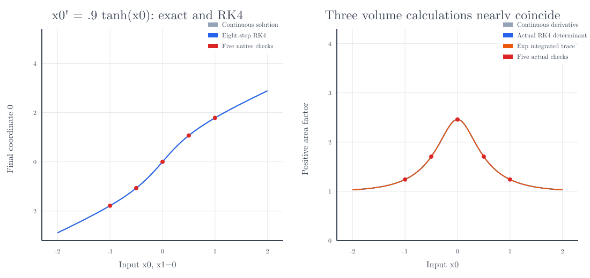
Resolve numerical refinement and the source coefficient floor
For steps h, the source computes dt=1.f/h, half=.5f*dt, sixth=dt/6.f and all stage times in Float32, then promotes them for tensor arithmetic. This remains true with Float64 tensors. In particular, 8*6*Double(Float32((1.f/8)/6.f)) is slightly above 1. The grouping of each RK4 update is (a+d)+2(b+c). Refining the solver reduces truncation error, but does not remove this retained coefficient/time rounding policy.
The following five runs use 4,8,16,32,64 steps on every one of the same 257 input rows. The table and plot retain the maximum coordinate error against the continuous solution, the actual-discrete-logdet minus integrated-trace error, and reverse-RK4 roundtrip error. Coordinate accuracy reaches a floor near 2.66e−8 here. A smaller numerical residual is not a claim of an exact inverse or exact discrete-map density.
#include <dm/dm.hpp>
namespace n=dm::nn;namespace m=n::models;using T=n::Tensor;
void SetField(n::ParameterStore& p,double output_weight,bool cross=false){
m::CnfField(p,n::zeros({1,2},n::DType::Float64),0.f);
std::vector<double> wi(24,0),wo(16,0);wi[0]=1.;if(cross)wi[8]=1.;wo[0]=output_weight;if(cross)wo[1]=.5;
p.set("field/hidden/W",n::from_vector(wi,{3,8}));p.set("field/output/W",n::from_vector(wo,{8,2}));p.set("field/hidden/b",n::zeros({8},n::DType::Float64));p.set("field/output/b",n::zeros({2},n::DType::Float64));
}
T ActualLogdet(const T& value,const T& input){
const auto keep=n::GradOptions{true,false,false};auto a=n::grad(n::sum(n::select(value,1,0)),{input},keep)[0],b=n::grad(n::sum(n::select(value,1,1)),{input},keep)[0];
auto determinant=n::select(a,1,0)*n::select(b,1,1)-n::select(a,1,1)*n::select(b,1,0);
if(n::min(determinant).item()<=0)throw std::runtime_error("Positive worked-map determinant");return n::log(determinant);
}
T Continuous(const T& x){auto u=n::sinh(x)*n::exp(n::full({},.9,n::DType::Float64));return n::log(u+n::sqrt(n::square(u)+1.));}
T ContinuousLogdet(const T& x){return .9+n::log(n::cosh(x))-n::log(n::cosh(Continuous(x)));}
int main(){
auto type=n::DType::Float64;n::ParameterStore p(10003,type);SetField(p,3.);
auto axis=n::arange(0,257,1,type)/64.-2.;auto input=n::stack({axis,n::zeros({257},type)},1).requires_grad_();auto exact=Continuous(axis);
std::vector<double> steps,states,determinants,roundtrips;
std::print("| RK4 steps | Max coordinate / continuous error | Max actual logdet / integrated error | Max reverse roundtrip error |\n|---:|---:|---:|---:|\n");
for(int count:{4,8,16,32,64}){auto path=m::CnfIntegrate(p,input,false,count),rec=m::CnfIntegrate(p,path.latent,true,count);auto actual=ActualLogdet(path.latent,input);
double state=n::max(n::abs(n::select(path.latent,1,0)-exact)).item(),det=n::max(n::abs(actual-path.logdet)).item(),back=n::max(n::abs(rec.latent-input)).item();
steps.push_back(count);states.push_back(state);determinants.push_back(det);roundtrips.push_back(back);std::print("|{}|{:.12g}|{:.12g}|{:.12g}|\n",count,state,det,back);}
auto s=n::from_vector(steps,{5}),a=n::from_vector(states,{5}),d=n::from_vector(determinants,{5}),r=n::from_vector(roundtrips,{5});auto x=n::log(s)/std::log(2.);
dm::graphics::RPlot::create().lines(x.to_vector<double>(),(n::log(a)/std::log(10.)).to_vector<double>(),"Coordinate / exact ODE",{37,99,235})
.lines(x.to_vector<double>(),(n::log(d)/std::log(10.)).to_vector<double>(),"Actual logdet / integral",{234,88,12})
.lines(x.to_vector<double>(),(n::log(r)/std::log(10.)).to_vector<double>(),"Reverse RK4 roundtrip",{22,163,74})
.points(x.to_vector<double>(),(n::log(a)/std::log(10.)).to_vector<double>(),"Five coordinate errors",{37,99,235},4)
.points(x.to_vector<double>(),(n::log(d)/std::log(10.)).to_vector<double>(),"Five logdet errors",{234,88,12},4)
.points(x.to_vector<double>(),(n::log(r)/std::log(10.)).to_vector<double>(),"Five roundtrip errors",{22,163,74},4)
.size(1100,620).margins(90,24,60,80).x_limits(1.7,6.3).y_limits(-11.3,-2.5).x_label("Log2 fixed RK4 step count").y_label("Log10 maximum absolute error").title("Refinement retains the source Float32 coefficient/time policy").save_svg("build/cnf_refinement.svg");
n::save_npz("build/cnf_refinement_values.npz",{{"steps",s},{"coordinate_error",a},{"logdet_error",d},{"roundtrip_error",r}});
}| RK4 steps | Max coordinate / continuous error | Max actual logdet / integrated error | Max reverse roundtrip error |
|---|---|---|---|
| 4 | 7.33718104529e-06 | 1.59462738054e-05 | 1.19578113617e-06 |
| 8 | 4.77696611156e-07 | 1.0954381936e-06 | 3.6623983346e-08 |
| 16 | 2.5879313803e-08 | 7.23889892473e-08 | 8.41934577611e-10 |
| 32 | 2.65955333312e-08 | 4.95779484133e-09 | 1.86358706245e-10 |
| 64 | 2.66458979326e-08 | 4.77595407666e-10 | 1.02768571431e-10 |
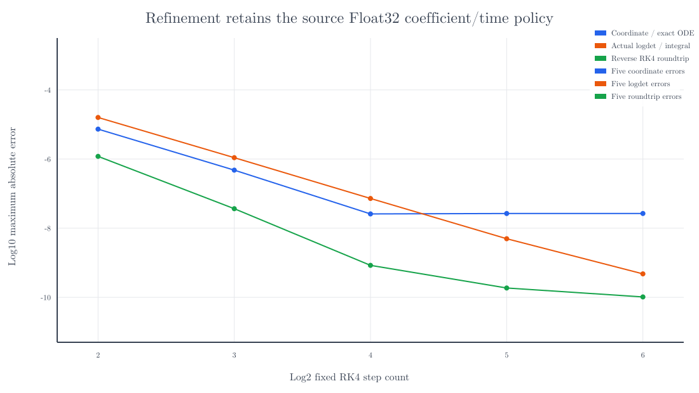
Derive the deterministic two-probe identity
For a two-dimensional field Jacobian A, [Grathwohl et al., FFJORD (2018)](https://arxiv.org/abs/1810.01367) motivates trace estimates using probe contractions. This source uses a fixed pair e+=(1,1), e−=(1,−1):
The pair is deterministic, with no random probe stream. A fixed single probe generally differs from divergence, even with arbitrarily small solver steps. Native modes 0 and 3 use exact trace or the paired mean; modes 1/2 are fixed-probe diagnostic integrals and generally do not define a density likelihood.
Set one hidden activation h=tanh(x0+x1), and velocity (.3h,.15h). Its Jacobian is sech²(x0+x1)*[[.3,.3],[.15,.15]]. Exact trace is .45 sech², the plus probe is .9 sech² and the minus probe is zero. The following native example retains five checks and 257 curve rows. It also integrates all four modes: their states are bit-identical, while the table shows their different trace integrals and the actual discrete-map logdet. The integrated pair is a numerical full-trace calculation; the single-probe columns are diagnostics.
#include <dm/dm.hpp>
namespace n=dm::nn;namespace m=n::models;using T=n::Tensor;
void SetField(n::ParameterStore& p,double output_weight,bool cross=false){
m::CnfField(p,n::zeros({1,2},n::DType::Float64),0.f);
std::vector<double> wi(24,0),wo(16,0);wi[0]=1.;if(cross)wi[8]=1.;wo[0]=output_weight;if(cross)wo[1]=.5;
p.set("field/hidden/W",n::from_vector(wi,{3,8}));p.set("field/output/W",n::from_vector(wo,{8,2}));p.set("field/hidden/b",n::zeros({8},n::DType::Float64));p.set("field/output/b",n::zeros({2},n::DType::Float64));
}
T ActualLogdet(const T& value,const T& input){
const auto keep=n::GradOptions{true,false,false};auto a=n::grad(n::sum(n::select(value,1,0)),{input},keep)[0],b=n::grad(n::sum(n::select(value,1,1)),{input},keep)[0];
auto determinant=n::select(a,1,0)*n::select(b,1,1)-n::select(a,1,1)*n::select(b,1,0);
if(n::min(determinant).item()<=0)throw std::runtime_error("Positive worked-map determinant");return n::log(determinant);
}
T Continuous(const T& x){auto u=n::sinh(x)*n::exp(n::full({},.9,n::DType::Float64));return n::log(u+n::sqrt(n::square(u)+1.));}
T ContinuousLogdet(const T& x){return .9+n::log(n::cosh(x))-n::log(n::cosh(Continuous(x)));}
int main(){
auto type=n::DType::Float64;n::ParameterStore p(10003,type);SetField(p,1.,true);
auto axis=n::from_vector(std::vector<double>{-2,-1,0,1,2},{5});auto input=n::stack({axis,n::zeros({5},type)},1).requires_grad_();auto f=m::CnfField(p,input,.5f);
auto field_actual=[&](const T& value,const T& x){const auto keep=n::GradOptions{true,false,false};auto a=n::grad(n::sum(n::select(value,1,0)),{x},keep)[0],b=n::grad(n::sum(n::select(value,1,1)),{x},keep)[0];return n::select(a,1,0)+n::select(b,1,1);};
auto actual=field_actual(f.velocity,input);auto exact=.45*(1.-n::square(n::tanh(axis)));
if(n::max(n::abs(f.exact_trace-exact)).item()>1e-16||n::max(n::abs(.5*(f.hutchinson_plus+f.hutchinson_minus)-actual)).item()>1e-16||n::max(n::abs(f.hutchinson_minus)).item()!=0)throw std::runtime_error("Two-probe hand calculation");
auto dense=n::arange(0,257,1,type)/64.-2.;auto grid=n::stack({dense,n::zeros({257},type)},1).requires_grad_();auto curve=m::CnfField(p,grid,.5f);auto curve_actual=field_actual(curve.velocity,grid);
auto left=dm::graphics::RPlot::create();left.lines(dense.to_vector<double>(),n::select(curve.velocity,1,0).to_vector<double>(),"Velocity 0",{37,99,235}).lines(dense.to_vector<double>(),n::select(curve.velocity,1,1).to_vector<double>(),"Velocity 1",{234,88,12})
.points(axis.to_vector<double>(),n::select(f.velocity,1,0).to_vector<double>(),"Five component-0 checks",{37,99,235},4).points(axis.to_vector<double>(),n::select(f.velocity,1,1).to_vector<double>(),"Five component-1 checks",{234,88,12},4)
.margins(78,22,54,70).x_limits(-2.3,2.3).y_limits(-.4,.9).x_label("Input x0, x1=0").y_label("Field velocity").title("One hidden unit, cross-coordinate field");
auto right=dm::graphics::RPlot::create();right.lines(dense.to_vector<double>(),curve.hutchinson_plus.to_vector<double>(),"Plus probe",{234,88,12}).lines(dense.to_vector<double>(),curve.hutchinson_minus.to_vector<double>(),"Minus probe",{22,163,74})
.lines(dense.to_vector<double>(),curve.exact_trace.to_vector<double>(),"Exact field trace",{37,99,235}).lines(dense.to_vector<double>(),curve.divergence.to_vector<double>(),"Paired mean",{126,34,206})
.points(axis.to_vector<double>(),actual.to_vector<double>(),"Five actual traces",{220,38,38},4)
.margins(78,22,54,70).x_limits(-2.3,2.3).y_limits(-.1,1.8).x_label("Input x0").y_label("Trace / probe contraction").title("The pair cancels off-diagonal terms");
dm::graphics::RLayout::create(1,2).add(left).add(right).size(1100,520).fit_panels().save_svg("build/cnf_probe.svg");
std::vector<T> integrals,states;for(int mode=0;mode<4;++mode){auto path=m::CnfIntegrate(p,input,false,8,mode);integrals.push_back(path.logdet);states.push_back(path.latent);if(mode&&!n::equal_bits(path.latent,states[0]))throw std::runtime_error("Trace mode must not alter velocity path");}
auto discrete=ActualLogdet(states[0],input);
n::save_npz("build/cnf_probe_values.npz",{{"axis",axis},{"input",input},{"velocity",f.velocity},{"exact_trace",f.exact_trace},{"plus",f.hutchinson_plus},{"minus",f.hutchinson_minus},{"paired",f.divergence},{"actual_trace",actual},{"dense_axis",dense},{"curve_velocity",curve.velocity},{"curve_exact_trace",curve.exact_trace},{"curve_plus",curve.hutchinson_plus},{"curve_minus",curve.hutchinson_minus},{"curve_paired",curve.divergence},{"curve_actual_trace",curve_actual},{"mode0_integral",integrals[0]},{"mode1_integral",integrals[1]},{"mode2_integral",integrals[2]},{"mode3_integral",integrals[3]},{"mode_states",n::concat(states,1)},{"actual_discrete_logdet",discrete}});
std::print("| Input x0 | Exact field trace | Plus | Minus | Paired | Exact-mode integral | Plus integral | Minus integral | Paired integral | Actual RK4 logdet |\n|---:|---:|---:|---:|---:|---:|---:|---:|---:|---:|\n");
auto x=axis.to_vector<double>(),t=f.exact_trace.to_vector<double>(),plus=f.hutchinson_plus.to_vector<double>(),minus=f.hutchinson_minus.to_vector<double>(),paired=f.divergence.to_vector<double>(),i0=integrals[0].to_vector<double>(),i1=integrals[1].to_vector<double>(),i2=integrals[2].to_vector<double>(),i3=integrals[3].to_vector<double>(),j=discrete.to_vector<double>();
for(int i=0;i<5;++i)std::print("|{:.0f}|{:.10f}|{:.10f}|{:.10f}|{:.10f}|{:.10f}|{:.10f}|{:.10f}|{:.10f}|{:.10f}|\n",x[i],t[i],plus[i],minus[i],paired[i],i0[i],i1[i],i2[i],i3[i],j[i]);
}| Input x0 | Exact field trace | Plus | Minus | Paired | Exact-mode integral | Plus integral | Minus integral | Paired integral | Actual RK4 logdet |
|---|---|---|---|---|---|---|---|---|---|
| -2 | 0.0317928712 | 0.0635857424 | 0.0000000000 | 0.0317928712 | 0.0214153102 | 0.0428306203 | 0.0000000000 | 0.0214153102 | 0.0214153102 |
| -1 | 0.1889884537 | 0.3779769075 | 0.0000000000 | 0.1889884537 | 0.1433249876 | 0.2866499752 | 0.0000000000 | 0.1433249876 | 0.1433249930 |
| 0 | 0.4500000000 | 0.9000000000 | 0.0000000000 | 0.4500000000 | 0.4500000134 | 0.9000000268 | 0.0000000000 | 0.4500000134 | 0.4499999772 |
| 1 | 0.1889884537 | 0.3779769075 | 0.0000000000 | 0.1889884537 | 0.1433249876 | 0.2866499752 | 0.0000000000 | 0.1433249876 | 0.1433249930 |
| 2 | 0.0317928712 | 0.0635857424 | 0.0000000000 | 0.0317928712 | 0.0214153102 | 0.0428306203 | 0.0000000000 | 0.0214153102 | 0.0214153102 |
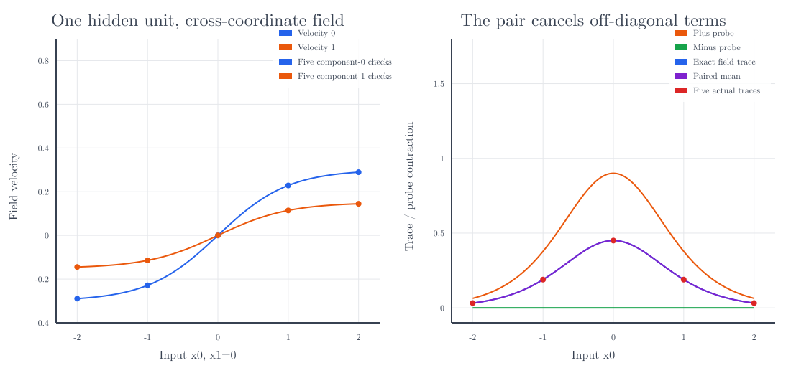
Preserve the original banana pools and shared field architecture
The source uses procedural standard-Gaussian pairs u,v mapped to x0=u, x1=v+.5(u²−1), a unit-volume triangular bend. Its inverse makes analytic truth available. The five exact points below show the bend before the original 512 fitting, 128 validation and 128 test rows. Native midpoint-MT Box-Muller Double draws use seeds 9203,9209,9221; source observations cast to Float32. Source IDs have offsets 0,10000,20000. All 1,024 prior draws use seed 9257. These are the original synthetic teaching observations, without a substitute distribution or external prepared dataset.
#include <dm/dm.hpp>
int main(){
namespace n=dm::nn;namespace m=n::models;auto type=n::DType::Float64;
auto u=n::from_vector(std::vector<double>{-2,-1,0,1,2},{5});auto base=n::stack({u,n::zeros({5},type)},1);
auto points=m::BananaPoints(base,.5,type);auto target=n::from_vector(std::vector<double>{1.5,0,-.5,0,1.5},{5});
if(!n::equal_bits(n::select(points,1,1),target)||n::max(n::abs(m::BananaLogProbability(points)-m::StandardNormalLogProbability(base))).item()>1e-14)throw std::runtime_error("Analytic banana");
auto axis=n::arange(0,129,1,type)/32.-2.;auto curve=m::BananaPoints(n::stack({axis,n::zeros({129},type)},1),.5,type);
dm::graphics::RPlot::create().lines(axis.to_vector<double>(),n::select(curve,1,1).to_vector<double>(),"v=0 banana curve",{37,99,235})
.points(u.to_vector<double>(),std::vector<double>(5,0),"Base v=0",{100,116,139},5)
.points(u.to_vector<double>(),target.to_vector<double>(),"Five native points",{220,38,38},4)
.y_limits(-.7,2.6).x_label("u = x0").y_label("x1 = v + .5(u^2 - 1)")
.title("Unit-volume bending gives an analytic teaching density").save_svg("build/cnf_banana_toy.svg");
std::print("Five exact banana coordinates; native analytic log densities match their inverse standard-normal coordinates.\n");
}Five exact banana coordinates; native analytic log densities match their inverse standard-normal coordinates.

The fitted field is f=.3*(tanh([x,t]W1+b1)W2+b2), with W1[3,8], b1[8], W2[8,2], b2[2]. This is *50 stored values in four leaves*. Hidden/output kernels are initialized first with normal deviations .3/.1, then biases .05/0. The separate log_scale[2] gives *52 values in five leaves*. Source seed 10003 warms field kernels first and global scale last. The optional reference initial arrays are absent, so native initialization is used.
One field is reused at every RK4 evaluation. The executed graph groups the first and second four-step halves: each depends on the *same 50 field values*, with two additional global-scale values. The unique total is 52, not 102. The generic original metrics retain hidden=16 and coupling_layers=4; those are legacy harness metadata. The actual hidden width is 8, and four diagnostics refer to quarter trajectories, not four separately parameterized field networks.
#include <dm/dm.hpp>
int main(){
namespace n=dm::nn;n::ParameterStore p(10003);
n::Module model([&](const n::Tensor& x){auto o=n::models::CnfDensity(p,x);
n::model_stage("Shared field: first 4 RK4 steps",x,o.stage1);
n::model_stage("Same field: next 4 RK4 steps",o.stage1,o.unscaled);
return n::model_stage("Positive diagonal scale",o.unscaled,o.latent);
},"CNF: 52 unique values / 5 leaves");
n::ModelPlotOptions options;options.detail=n::ModelPlotDetail::Blocks;options.sizing.minimum_extent=2;options.sizing.max_planes=2;
auto figure=model.plot(n::zeros({1,2}),options);
if(figure.parameter_count()!=52||p.size()!=5)throw std::runtime_error("Executed CNF census");
figure.save_svg("build/cnf_network.svg");
}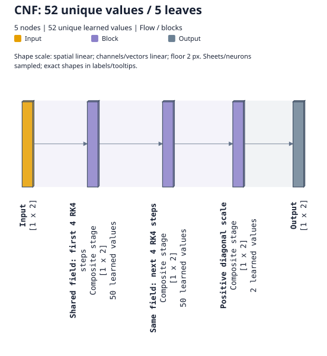
Run the complete fitting and numerical inverse workflow
This editable program owns the experiment: a source-initialized store, Adam(.003; beta1 .9, beta2 .999, epsilon 1e−8), and BatchOrder(512,32,10021). It performs three fixed epochs and 48 explicit optimizer writes, logging validation each epoch. Epoch 3 is selected in advance; held-out likelihood does not choose a checkpoint. Mode 3 uses the deterministic paired field trace throughout training and evaluation.
After saving and bit-exactly restoring weights, the program retains all four quarter states, cumulative trace integrals, endpoint divergence and velocity; field diagnostics at t=.5 on the raw test inputs; actual forward/reverse RK4 Jacobians; every prior sample, roundtrip and numerical change-of-variables identity; and the original density grid and fitting-only Gaussian baselines. Inference is immutable. Every numerical/model operation uses native tensors; the visible caller owns every fit, restore, evaluation and report step.
#include <dm/dm.hpp>
namespace n=dm::nn;namespace m=n::models;namespace fs=std::filesystem;
using T=n::Tensor;using A=std::map<std::string,T>;
void Require(bool ok,const std::string& what){if(!ok)throw std::runtime_error(what);}
void Save(const fs::path& file,const A& fields){
n::NamedTensors named;for(const auto& [key,value]:fields)named.emplace_back(key,value);
n::save_npz(file.string(),named);
}
A Weights(const n::ParameterStore& p){
A out;for(const auto& name:p.names())out.emplace(name,p.at(name).detach().clone());return out;
}
bool Equal(const A& a,const A& b){
if(a.size()!=b.size())return false;
for(const auto& [key,value]:a)if(!b.count(key)||!n::equal_bits(value,b.at(key)))return false;
return true;
}
T Column(const T& x,int k){return n::slice_axis(x,1,k,k+1);}
A Evaluate(n::ParameterStore& p,const T& x){
auto input=x.detach().clone().requires_grad_();auto path=m::CnfDensity(p,input);
auto rec=m::CnfInverse(p,path.latent);auto density=m::NormalFlowDensity(path.latent,path.logdet,true);
A out{{"latent",path.latent},{"unscaled",path.unscaled},{"reconstruction",rec.value},
{"base_log_probability",density.base_log_probability},{"log_probability",density.log_probability},
{"forward_logdet",path.logdet},{"inverse_logdet",rec.logdet},{"loss",density.loss},
{"coupling0",path.stage0},{"coupling_logdet0",path.stage_logdet0},{"coupling_scale0",path.stage_divergence0},{"coupling_shift0",path.stage_velocity0},{"coupling1",path.stage1},{"coupling_logdet1",path.stage_logdet1},{"coupling_scale1",path.stage_divergence1},{"coupling_shift1",path.stage_velocity1},{"coupling2",path.stage2},{"coupling_logdet2",path.stage_logdet2},{"coupling_scale2",path.stage_divergence2},{"coupling_shift2",path.stage_velocity2},{"coupling3",path.stage3},{"coupling_logdet3",path.stage_logdet3},{"coupling_scale3",path.stage_divergence3},{"coupling_shift3",path.stage_velocity3}};
for(int k=0;k<2;++k)out["jacobian_row"+std::to_string(k)]=n::grad(n::sum(Column(path.latent,k)),{input},n::GradOptions{true,false,false})[0];
auto field=m::CnfField(p,input,.5f);
out["field_velocity"]=field.velocity;out["field_exact_trace"]=field.exact_trace;
out["field_hutchinson_plus"]=field.hutchinson_plus;out["field_hutchinson_minus"]=field.hutchinson_minus;
for(int k=0;k<2;++k)out["field_jacobian_row"+std::to_string(k)]=n::grad(n::sum(Column(field.velocity,k)),{input},n::GradOptions{true,false,false})[0];
for(auto& [key,value]:out)value=value.detach().contiguous();return out;
}
A Sample(n::ParameterStore& p,const T& z){
auto prior=z.detach().clone().requires_grad_();auto inv=m::CnfInverse(p,prior);
auto roundtrip=m::CnfDensity(p,inv.value).latent;
A out{{"prior",z},{"samples",inv.value},{"prior_roundtrip",roundtrip},{"inverse_logdet",inv.logdet}};
for(int k=0;k<2;++k)out["inverse_jacobian_row"+std::to_string(k)]=n::grad(n::sum(Column(inv.value,k)),{prior},n::GradOptions{true,false,false})[0];
for(auto& [key,value]:out)value=value.detach().contiguous();return out;
}
T Loss(n::ParameterStore& p,const T& x){auto o=m::CnfDensity(p,x);return m::NormalFlowDensity(o.latent,o.logdet,true).loss;}
A NamedGradients(n::ParameterStore& p,const std::vector<T>& gradients){
A out;auto names=p.names();for(std::size_t i=0;i<names.size();++i)out[names[i]]=gradients[i];return out;
}
// Preserve the source's serial Double reductions without hiding numerical math
// in host loops: divide each row first, native cumulative sum, then last row.
T SerialMean(const T& values){return n::select(n::cumsum(n::cast(values,n::DType::Float64)/double(values.size(0)),0),0,values.size(0)-1);}
T ActualLogdet(const A& fields,const std::string& prefix){
auto a=n::cast(fields.at(prefix+"jacobian_row0"),n::DType::Float64);
auto b=n::cast(fields.at(prefix+"jacobian_row1"),n::DType::Float64);
auto det=n::reshape(Column(a,0)*Column(b,1)-Column(a,1)*Column(b,0),{-1});
Require(n::min(det).item()>0,"Orientation-preserving actual Jacobian");return n::log(det);
}
int main(){
n::set_num_threads(4);fs::path root="build/cnf_density";fs::create_directories(root);
A data;std::vector<T> pools;
for(int split=0;split<3;++split){
const int rows=split?128:512,seed=split==0?9203:split==1?9209:9221;
const std::string name=split==0?"fit":split==1?"validation":"test";
auto base=m::GaussianNoise({2},rows,seed);auto points=m::BananaPoints(base);
data[name+"_base"]=base;data[name+"_points"]=points;
data[name+"_source_ids"]=n::cast(n::arange(split*10000,split*10000+rows),n::DType::Int32);
pools.push_back(points);
}
// Explicit latent-only sampling bank: all 1024 rows, generated once with seed9257.
auto prior=n::cast(m::GaussianNoise({2},1024,9257),n::DType::Float32);
data["sample_prior"]=prior;Save(root/"data.npz",data);
std::ofstream protocol(root/"source_protocol.json");
protocol<<R"JSON({"distribution":"SYNTHETICanalyticbanana","base":"standardGaussian2D","mapping":"x0=u0;x1=u1+.5*(u0^2-1)","true_forward_logdet":0,"fit":512,"validation":128,"test":128,"seeds":[9203,9209,9221],"sample_prior_seed":9257,"sample_prior_count":1024,"source_id_offsets":[0,10000,20000]})JSON"<<'\n';protocol.close();
n::ParameterStore parameters(10003);
{n::NoGradGuard guard;m::CnfDensity(parameters,n::zeros({1,2}));m::CnfInverse(parameters,n::zeros({1,2}));}
Require(parameters.count()==52&¶meters.size()==5,"52 values /5 leaves");
Save(root/"initial_arrays.npz",Weights(parameters));Save(root/"initial_outputs.npz",Evaluate(parameters,pools[2]));
n::OptimizerConfig config;config.kind=n::OptimizerKind::Adam;config.beta1=.9;config.beta2=.999;config.epsilon=1e-8;
n::Optimizer optimizer(parameters,.003,config);n::BatchOrder order(512,32,10021);
std::ofstream history(root/"history.tsv"),batches(root/"batches.tsv");history.precision(17);
history<<"epoch\tvalidation_nll\tvalidation_mean_forward_logdet\n";batches<<"epoch\tstep\trow\n";
int step=0;T first;
for(int epoch=1;epoch<=3;++epoch){
order.begin_epoch();
for(;;){
auto rows=order.next();if(rows.empty())break;auto batch=n::take_rows(pools[0],rows);
if(step==0){first=batch;Save(root/"first_batch.npz",{{"points",batch}});Save(root/"first_forward.npz",Evaluate(parameters,batch));}
// Complete fitting step: native likelihood, explicit reverse-mode partials,
// caller-owned Adam write. No model helper owns any update or fitting loop.
auto loss=Loss(parameters,batch);auto gradients=n::grad(loss,parameters.parameters());
auto named=NamedGradients(parameters,gradients);Save(root/("batch"+std::to_string(step)+"-gradient.npz"),named);
if(step==0)Save(root/"initial_gradients.npz",named);
optimizer.step(gradients);
Save(root/("batch"+std::to_string(step)+"-after.npz"),Weights(parameters));
Save(root/("batch"+std::to_string(step)+"-iterations.npz"),{{"iterations",n::from_vector(std::vector<std::int64_t>{optimizer.iterations()},{1})}});
if(step==0)Save(root/"first_after.npz",Weights(parameters));
for(auto row:rows)batches<<epoch<<'\t'<<step<<'\t'<<row<<'\n';++step;
}
auto validation=Evaluate(parameters,pools[1]);
history<<epoch<<'\t'<<validation.at("loss").item<float>()<<'\t'<<SerialMean(validation.at("forward_logdet")).item()<<'\n';
Save(root/("epoch"+std::to_string(epoch)+"_arrays.npz"),Weights(parameters));
Save(root/("epoch"+std::to_string(epoch)+"_validation.npz"),validation);
}
Require(step==48&&optimizer.iterations()==48,"All48 Adam writes");history.close();batches.close();
parameters.save((root/"final.npz").string());
Save(root/"final_gradients.npz",NamedGradients(parameters,n::grad(Loss(parameters,first),parameters.parameters())));
n::ParameterStore deployed(10003);
{n::NoGradGuard guard;m::CnfDensity(deployed,n::zeros({1,2}));m::CnfInverse(deployed,n::zeros({1,2}));}
deployed.load((root/"final.npz").string(),true);Require(Equal(Weights(parameters),Weights(deployed)),"Bit-exact weight restore");
auto before=Weights(deployed);auto output=Evaluate(deployed,pools[2]);
Save(root/"outputs.npz",output);Save(root/"model_arrays.npz",Weights(deployed));
auto samples=Sample(deployed,prior);Require(Equal(samples,Sample(deployed,prior)),"Repeat inverse sampling and Jacobians bit exact");
Save(root/"samples.npz",samples);auto sample_density=Evaluate(deployed,samples.at("samples"));Save(root/"sample_density.npz",sample_density);
auto roundtrip=n::abs(n::cast(output.at("reconstruction"),n::DType::Float64)-n::cast(pools[2],n::DType::Float64));
auto prior_error=n::abs(n::cast(samples.at("prior_roundtrip"),n::DType::Float64)-n::cast(prior,n::DType::Float64));
auto actual=ActualLogdet(output,"");auto inverse_actual=ActualLogdet(samples,"inverse_");
auto det_error=n::abs(actual-n::cast(output.at("forward_logdet"),n::DType::Float64));
auto inverse_error=n::abs(inverse_actual-n::cast(samples.at("inverse_logdet"),n::DType::Float64));
auto base=m::StandardNormalLogProbability(n::cast(prior,n::DType::Float64));
auto normalization=n::abs(n::cast(sample_density.at("log_probability"),n::DType::Float64)+n::cast(samples.at("inverse_logdet"),n::DType::Float64)-base);
Require(n::max(roundtrip).item()<5e-6&&n::max(prior_error).item()<5e-6,"Both numerical RK4 roundtrips");
Require(n::max(det_error).item()<5e-6&&n::max(inverse_error).item()<5e-6,"Numerical integrated traces/actual discrete-map logdets");
Require(n::max(n::abs(output.at("forward_logdet")+output.at("inverse_logdet"))).item()<5e-6,"Per-point reconstruction logdet cancellation");
Require((n::max(output.at("forward_logdet"))-n::min(output.at("forward_logdet"))).item()>1e-5,"Spatially varying forward logdet");
Require(n::max(normalization).item()<2e-5,"All1024 change-of-variables identities");
auto single=Evaluate(deployed,n::take_rows(pools[2],{0}));
Require(n::max(n::abs(single.at("latent")-n::take_rows(output.at("latent"),{0}))).item()<2e-6,"Single/batch parity");
std::vector<float> grid;for(int y=0;y<128;++y)for(int x=0;x<128;++x){grid.push_back(float((x+.5)/16-4));grid.push_back(float(4-(y+.5)/16));}
auto coordinates=n::from_vector(grid,{128*128,2});auto density=Evaluate(deployed,coordinates);auto truth=m::BananaLogProbability(coordinates);
Save(root/"grid.npz",{{"points",coordinates},{"model_log_probability",density.at("log_probability")},{"true_log_probability",truth}});
auto actual_field_trace=n::select(output.at("field_jacobian_row0"),1,0)+n::select(output.at("field_jacobian_row1"),1,1);
auto paired_field_trace=.5*(n::cast(output.at("field_hutchinson_plus"),n::DType::Float64)+n::cast(output.at("field_hutchinson_minus"),n::DType::Float64));
Require(n::max(n::abs(n::cast(actual_field_trace,n::DType::Float64)-n::cast(output.at("field_exact_trace"),n::DType::Float64))).item()<1e-6,"Actual field Jacobian trace");
Require(n::max(n::abs(paired_field_trace-n::cast(output.at("field_exact_trace"),n::DType::Float64))).item()<1e-6,"Deterministic paired field trace");
// Fit-only MLE moments (divide by N), retaining the original serial Double
// order with native cumsum. No held-out rows enter these two moment estimates.
auto fit=n::cast(pools[0],n::DType::Float64);auto mean=SerialMean(fit);auto centered=fit-mean;
auto covariance=SerialMean(n::expand_dims(centered,2)*n::expand_dims(centered,1));
auto cov=covariance.to_vector<double>();auto test=n::cast(pools[2],n::DType::Float64);
auto a=n::reshape(Column(test,0),{-1})-n::select(mean,0,0),c=n::reshape(Column(test,1),{-1})-n::select(mean,0,1);
auto determinant=n::select(n::select(covariance,0,0),0,0)*n::select(n::select(covariance,0,1),0,1)-n::select(n::select(covariance,0,0),0,1)*n::select(n::select(covariance,0,1),0,0);
Require(determinant.item()>0,"Fitting covariance positive determinant");
auto full=std::log(2*std::acos(-1.))+.5*n::log(determinant)+.5*(a*a*cov[3]-2.*a*c*cov[1]+c*c*cov[0])/determinant;
auto diagonal=std::log(2*std::acos(-1.))+.5*std::log(cov[0]*cov[3])+.5*(a*a/cov[0]+c*c/cov[3]);
auto identity=-m::StandardNormalLogProbability(test);auto true_test=m::BananaLogProbability(pools[2]);
Save(root/"baseline.npz",{{"fit_mean",mean},{"fit_covariance",covariance},{"true_test_log_probability",true_test}});
Save(root/"plot_values.npz",{{"full_gaussian_point_nll",full},{"diagonal_gaussian_point_nll",diagonal},{"identity_point_nll",identity},
{"true_point_nll",-true_test},{"actual_logdet",actual},{"inverse_actual_logdet",inverse_actual},
{"normalization_error",normalization},{"forward_roundtrip_absolute_error",roundtrip},{"inverse_roundtrip_absolute_error",prior_error}});
Require(Equal(before,Weights(deployed)),"All inference immutable");
// Preserve generic source metrics hidden16/coupling_layers4; actual field width8 and four shared-field quarter diagnostics.
std::ofstream meta(root/"metrics.json");meta.precision(17);
meta<<"{\"parameters\":52,\"parameter_tensors\":5,\"coupling_layers\":4,\"hidden\":16,\"base\":\"standardGaussian2D\",\"epochs\":3,\"optimizer_updates\":48,\"selected_epoch_fixed_final\":3,\"test_nll\":"<<output.at("loss").item<float>()
<<",\"true_test_nll\":"<<SerialMean(-true_test).item()<<",\"fit_full_gaussian_nll\":"<<SerialMean(full).item()
<<",\"fit_diagonal_gaussian_nll\":"<<SerialMean(diagonal).item()<<",\"identity_gaussian_nll\":"<<SerialMean(identity).item()
<<",\"forward_logdet_min\":"<<n::min(output.at("forward_logdet")).item()<<",\"forward_logdet_max\":"<<n::max(output.at("forward_logdet")).item()<<",\"mean_forward_logdet\":"<<SerialMean(output.at("forward_logdet")).item()<<",\"forward_inverse_max_error\":"<<n::max(roundtrip).item()
<<",\"inverse_forward_max_error\":"<<n::max(prior_error).item()<<",\"actual_vs_analytic_logdet_max_error\":"<<n::max(det_error).item()<<",\"ancestral_samples\":1024}";
std::print("48 Adam writes;52 values/5 leaves;all1024 numerical inverse samples and both Jacobians/roundtrips/normalization/restore/immutability pass. Test NLL {:.9f}.\n",output.at("loss").item());
}48 Adam writes;52 values/5 leaves;all1024 numerical inverse samples and both Jacobians/roundtrips/normalization/restore/immutability pass. Test NLL 2.994471788.
Inspect all four original quarter trajectories
All 128 held-out rows appear at t=.25,.5,.75,1 before global scaling. The first figure overlays the original inputs and each quarter state using equal physical coordinate scales. The next retains every source row for cumulative integral, endpoint divergence and both velocity components. Quarter logdet fields are *cumulative*, not incremental contributions to sum again. The old source coupling_scale/coupling_shift fields mean endpoint divergence/velocity.
#include <dm/dm.hpp>
int main(){
namespace n=dm::nn;using T=n::Tensor;std::map<std::string,T> out,data;for(auto& [k,x]:n::load_npz("build/cnf_density/outputs.npz"))out[k]=x;for(auto& [k,x]:n::load_npz("build/cnf_density/data.npz"))data[k]=x;
auto original=data.at("test_points");auto layout=dm::graphics::RLayout::create(2,2);
for(int i=0;i<4;++i){auto state=out.at("coupling"+std::to_string(i));auto p=dm::graphics::RPlot::create();
p.points(n::select(original,1,0).to_vector<double>(),n::select(original,1,1).to_vector<double>(),"Original test input",{148,163,184},3)
.points(n::select(state,1,0).to_vector<double>(),n::select(state,1,1).to_vector<double>(),"Quarter state",{37,99,235},3)
.margins(78,22,54,70).x_limits(-4,7).y_limits(-4,7).x_label("Coordinate 0").y_label("Coordinate 1").title(std::format("Shared field trajectory: t={:.2f}",.25*(i+1)));layout.add(p);}
layout.size(1100,1148).fit_panels().save_svg("build/cnf_quarters.svg");
}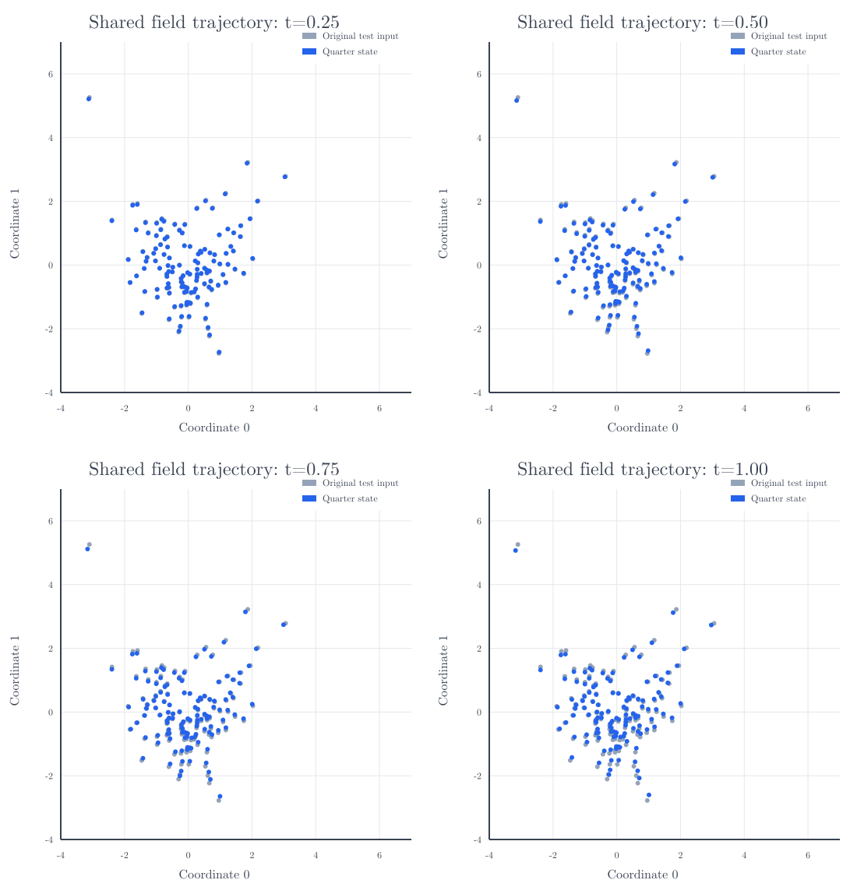
#include <dm/dm.hpp>
int main(){
namespace n=dm::nn;using T=n::Tensor;std::map<std::string,T> out;for(auto& [k,x]:n::load_npz("build/cnf_density/outputs.npz"))out[k]=x;
auto rows=n::arange(0,128).to_vector<double>();std::vector<dm::graphics::RGB> colors{{37,99,235},{234,88,12},{22,163,74},{126,34,206}};auto layout=dm::graphics::RLayout::create(2,2);
for(int kind=0;kind<4;++kind){auto p=dm::graphics::RPlot::create();for(int i=0;i<4;++i){auto values=kind==0?out.at("coupling_logdet"+std::to_string(i)):kind==1?out.at("coupling_scale"+std::to_string(i)):n::select(out.at("coupling_shift"+std::to_string(i)),1,kind-2);
p.points(rows,values.to_vector<double>(),std::format("t={:.2f}",.25*(i+1)),colors[i],2);}
p.margins(78,22,54,70).x_label("Original held-out row");
if(kind==0)p.y_limits(-.12,.08).y_label("Cumulative trace integral, nats").title("Four cumulative integrals, before global scale");
if(kind==1)p.y_limits(-.12,.08).y_label("Endpoint divergence, 1/time").title("Divergence at each quarter endpoint");
if(kind>=2)p.y_limits(-.24,.44).y_label(std::format("Velocity {}, coordinate/time",kind-2)).title(std::format("Endpoint field velocity component {}",kind-2));layout.add(p);}
layout.size(1100,1148).fit_panels().save_svg("build/cnf_quarter_profiles.svg");
}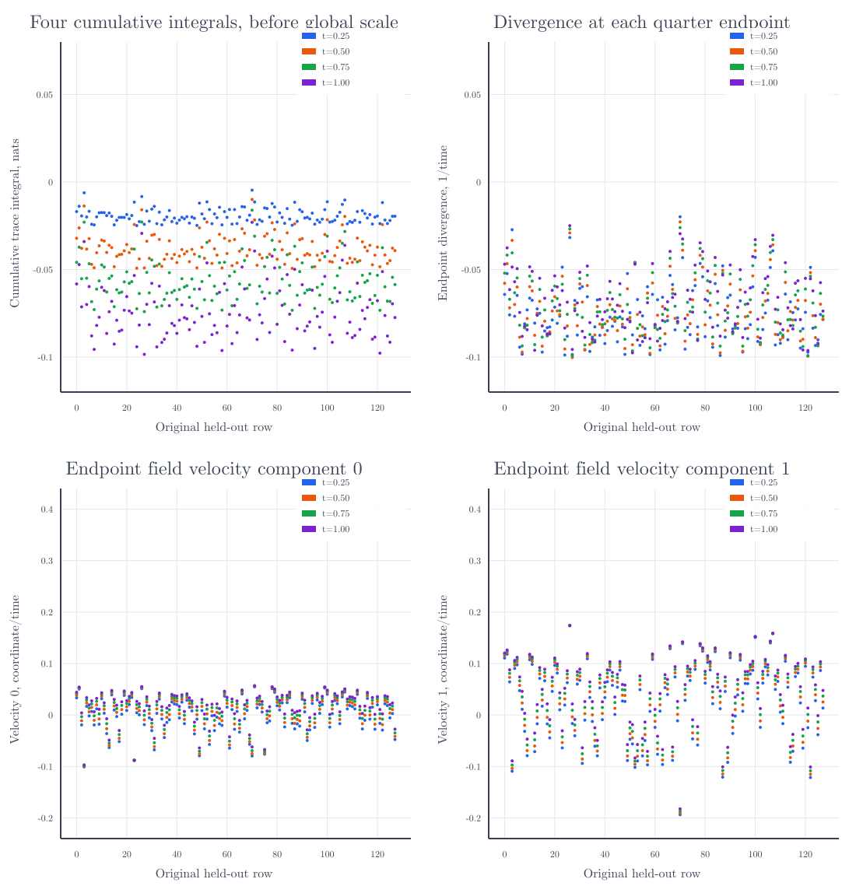
Check the fitted field at the original diagnostic time
The source evaluates the field at t=.5 on all 128 *raw held-out inputs*, not on a quarter-trajectory state. Grey velocity segments below end at x+5f(x,.5) for visibility; both original and endpoint markers are retained. The trace panel contains exact trace, both probe contractions, their paired mean and the trace of actual field Jacobians for every row. Paired and actual traces here use Double reductions of the saved Float32 fields, as in the source diagnostic; the model's mode-3 arithmetic computes its pair in the working tensor dtype.
#include <dm/dm.hpp>
int main(){
namespace n=dm::nn;using T=n::Tensor;std::map<std::string,T> out,data;for(auto& [k,x]:n::load_npz("build/cnf_density/outputs.npz"))out[k]=n::cast(x,n::DType::Float64);for(auto& [k,x]:n::load_npz("build/cnf_density/data.npz"))data[k]=n::cast(x,n::DType::Float64);
auto input=data.at("test_points"),tip=input+5.*out.at("field_velocity"),exact=out.at("field_exact_trace"),plus=out.at("field_hutchinson_plus"),minus=out.at("field_hutchinson_minus"),paired=.5*(plus+minus),actual=n::select(out.at("field_jacobian_row0"),1,0)+n::select(out.at("field_jacobian_row1"),1,1);
auto left=dm::graphics::RPlot::create();left.segments(n::select(input,1,0).to_vector<double>(),n::select(input,1,1).to_vector<double>(),n::select(tip,1,0).to_vector<double>(),n::select(tip,1,1).to_vector<double>(),{203,213,225},1.2)
.points(n::select(input,1,0).to_vector<double>(),n::select(input,1,1).to_vector<double>(),"Held-out input",{100,116,139},3).points(n::select(tip,1,0).to_vector<double>(),n::select(tip,1,1).to_vector<double>(),"x + 5*velocity",{37,99,235},2)
.margins(78,22,54,70).x_limits(-4,7).y_limits(-4,7).x_label("Coordinate 0").y_label("Coordinate 1").title("All 128 fitted field velocities at t=.5");
auto rows=n::arange(0,128).to_vector<double>();auto right=dm::graphics::RPlot::create();right.points(rows,plus.to_vector<double>(),"Plus probe",{234,88,12},3).points(rows,minus.to_vector<double>(),"Minus probe",{22,163,74},3)
.points(rows,exact.to_vector<double>(),"Exact field trace",{37,99,235},3).points(rows,paired.to_vector<double>(),"Paired mean",{126,34,206},2).points(rows,actual.to_vector<double>(),"Actual Jacobian trace",{30,41,59},1)
.margins(78,22,54,70).y_limits(-.13,.11).x_label("Original held-out row").y_label("Trace / probe contraction, 1/time").title("The deterministic pair and actual trace agree");
dm::graphics::RLayout::create(1,2).add(left).add(right).size(1100,574).fit_panels().save_svg("build/cnf_field.svg");
n::save_npz("build/cnf_field_plot_values.npz",{{"input",input},{"velocity_tip",tip},{"exact_trace",exact},{"plus",plus},{"minus",minus},{"paired",paired},{"actual_trace",actual},{"paired_error",paired-exact},{"actual_error",actual-exact}});
std::print("| Fitted-field diagnostic, all128 rows | Maximum absolute error |\n|---|---:|\n| Double paired mean - saved exact trace |{:.12g}|\n| Double actual Jacobian trace - saved exact |{:.12g}|\n",n::max(n::abs(paired-exact)).item(),n::max(n::abs(actual-exact)).item());
}| Fitted-field diagnostic, all128 rows | Maximum absolute error |
|---|---|
| Double paired mean - saved exact trace | 1.11758708954e-08 |
| Double actual Jacobian trace - saved exact | 1.95577740669e-08 |
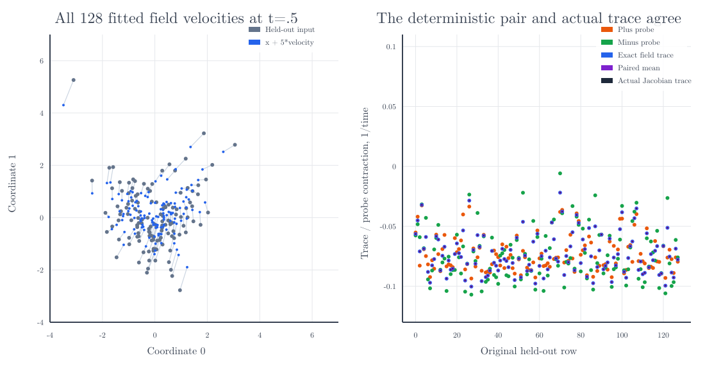
Retain every observation and the fixed-final comparison
All 768 original observations appear below. Validation NLL decreases from 2.902513027 to 2.895504951 over the three fixed epochs. Held-out test NLL is 2.994471788: only .000160035 below full Gaussian, and .000660428 above diagonal Gaussian. Both baselines use fitting-only MLE moments; analytic truth is a reference density, not a selected fit. These fixed-run differences do not quantify a repeatable improvement or between-run uncertainty.
#include <dm/dm.hpp>
int main(){
namespace n=dm::nn;std::map<std::string,n::Tensor> data;
for(auto& [key,value]:n::load_npz("build/cnf_density/data.npz"))data[key]=value;
auto plot=dm::graphics::RPlot::create();int i=0;
std::vector<dm::graphics::RGB> colors{{148,163,184},{37,99,235},{234,88,12}};
for(auto split:{"fit","validation","test"}){auto points=data.at(std::string(split)+"_points");
plot.points(n::select(points,1,0).to_vector<double>(),n::select(points,1,1).to_vector<double>(),split,colors[i++],3);}
plot.size(900,942).margins(90,24,72,84).x_limits(-4,7).y_limits(-4,7)
.x_label("x0").y_label("x1").title("Original banana pools: every row retained")
.save_svg("build/cnf_data.svg");
}
#include <dm/dm.hpp>
int main(){
namespace n=dm::nn;std::map<std::string,n::Tensor> out,v;
for(auto& [k,x]:n::load_npz("build/cnf_density/outputs.npz"))out[k]=x;
for(auto& [k,x]:n::load_npz("build/cnf_density/plot_values.npz"))v[k]=x;
auto serial=[](const n::Tensor& x){return n::select(n::cumsum(x/double(x.size(0)),0),0,x.size(0)-1).item();};
std::ifstream f("build/cnf_density/history.tsv");std::string header;std::getline(f,header);
std::vector<double> epoch,loss;double e,l,d;while(f>>e>>l>>d){epoch.push_back(e);loss.push_back(l);}
double full=serial(v.at("full_gaussian_point_nll")),diag=serial(v.at("diagonal_gaussian_point_nll")),identity=serial(v.at("identity_point_nll")),truth=serial(v.at("true_point_nll"));
auto plot=dm::graphics::RPlot::create();plot.lines(epoch,loss,"Validation CNF",{37,99,235})
.lines({1,3},{full,full},"Test fitted full Gaussian",{220,38,38})
.lines({1,3},{diag,diag},"Test fitted diagonal",{234,88,12})
.lines({1,3},{identity,identity},"Test identity Gaussian",{100,116,139})
.lines({1,3},{truth,truth},"Test analytic truth",{22,163,74})
.points({3},{out.at("loss").item()},"Final test CNF",{126,34,206},5)
.y_limits(2.75,3.3).x_label("Fixed fitting epoch").y_label("NLL, nats per two-coordinate row")
.title("CNF: tiny full-Gaussian gain, diagonal baseline better")
.save_svg("build/cnf_history.svg");
std::print("| Fixed-final test method | NLL, nats/row |\n|---|---:|\n| CNF |{:.12f}|\n| Fitting-only full Gaussian |{:.12f}|\n| Fitting-only diagonal Gaussian |{:.12f}|\n| Identity Gaussian |{:.12f}|\n| Analytic banana truth |{:.12f}|\n",out.at("loss").item(),full,diag,identity,truth);
}| Fixed-final test method | NLL, nats/row |
|---|---|
| CNF | 2.994471788406 |
| Fitting-only full Gaussian | 2.994631823106 |
| Fitting-only diagonal Gaussian | 2.993811360440 |
| Identity Gaussian | 3.013872926549 |
| Analytic banana truth | 2.796480843500 |
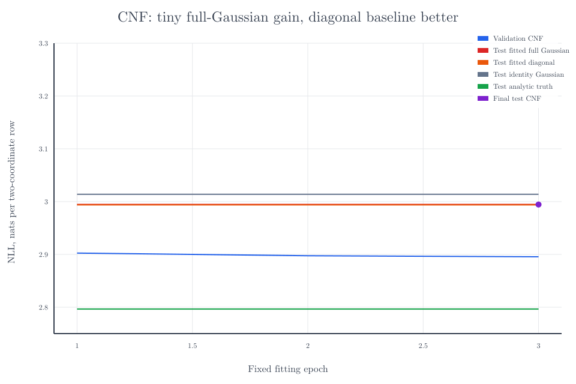
Inspect the original density grid and every inverse sample
The two heatmaps retain all 16,384 analytic-truth cells and all 16,384 source model cells on their original half-cell grid, with common PDF limits [0,.20], 32 colours and physical axis orientation. This is a numerical density display, not a global normalization integral. The fitted contours remain much less bent than the analytic banana. Both observation and latent scatter plots retain all 1,024 supplied prior rows or inverse samples and all 128 held-out rows, on equal physical coordinate scales. Sampling uses only the Gaussian bank and frozen final parameters.
#include <dm/dm.hpp>
int main(){
namespace n=dm::nn;std::map<std::string,n::Tensor> data;
for(auto& [k,x]:n::load_npz("build/cnf_density/grid.npz"))data[k]=x;
std::vector<double> axis;for(int i=0;i<128;++i)axis.push_back((i+.5)/16-4);
auto panel=[&](const char* key,const char* title){auto p=n::exp(data.at(key)).to_vector<double>();
std::vector<std::vector<double>> z(128,std::vector<double>(128));
for(int x=0;x<128;++x)for(int y=0;y<128;++y)z[x][y]=p[(127-y)*128+x];
auto plot=dm::graphics::RPlot::create();plot.image(axis,axis,z,dm::graphics::terrain_colors(32),0,.20)
.margins(72,22,54,64).x_limits(-4,4).y_limits(-4,4).x_label("x0").y_label("x1").title(title);return plot;};
dm::graphics::RLayout::create(1,2).add(panel("true_log_probability","Analytic banana PDF"))
.add(panel("model_log_probability","Final CNF PDF")).size(1100,574).fit_panels()
.save_svg("build/cnf_density.svg");
}
#include <dm/dm.hpp>
int main(){
namespace n=dm::nn;std::map<std::string,n::Tensor> a,b;
for(auto& [k,x]:n::load_npz("build/cnf_density/samples.npz"))a[k]=x;
for(auto& [k,x]:n::load_npz("build/cnf_density/data.npz"))b[k]=x;
auto left=a.at("samples"),right=b.at("test_points");
dm::graphics::RPlot::create().points(n::select(left,1,0).to_vector<double>(),n::select(left,1,1).to_vector<double>(),"Reverse RK4 samples",{148,163,184},3)
.points(n::select(right,1,0).to_vector<double>(),n::select(right,1,1).to_vector<double>(),"Held-out test",{234,88,12},4)
.size(900,942).margins(90,24,72,84).x_limits(-4,7).y_limits(-4,7)
.x_label("Coordinate 0").y_label("Coordinate 1").title("Observation space: held-out and all 1024 inverse samples").save_svg("build/cnf_samples.svg");
}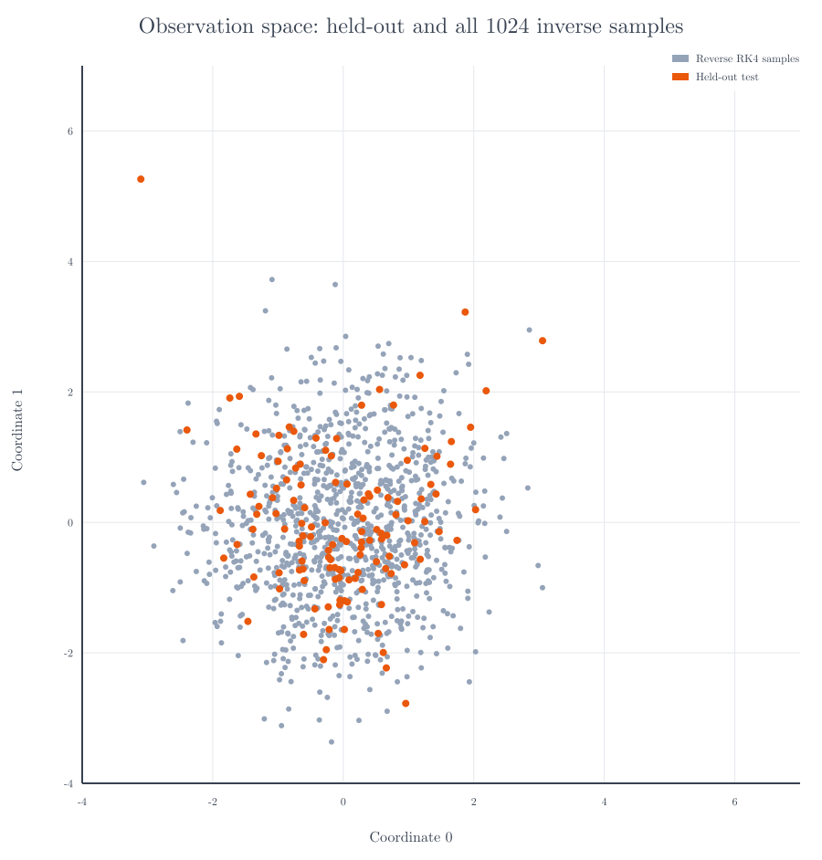
#include <dm/dm.hpp>
int main(){
namespace n=dm::nn;std::map<std::string,n::Tensor> a,b;
for(auto& [k,x]:n::load_npz("build/cnf_density/samples.npz"))a[k]=x;
for(auto& [k,x]:n::load_npz("build/cnf_density/outputs.npz"))b[k]=x;
auto left=a.at("prior"),right=b.at("latent");
dm::graphics::RPlot::create().points(n::select(left,1,0).to_vector<double>(),n::select(left,1,1).to_vector<double>(),"Gaussian prior",{148,163,184},3)
.points(n::select(right,1,0).to_vector<double>(),n::select(right,1,1).to_vector<double>(),"Transformed test",{234,88,12},4)
.size(900,942).margins(90,24,72,84).x_limits(-4,7).y_limits(-4,7)
.x_label("Coordinate 0").y_label("Coordinate 1").title("Latent space: transformed test and all 1024 Gaussian draws").save_svg("build/cnf_latent.svg");
}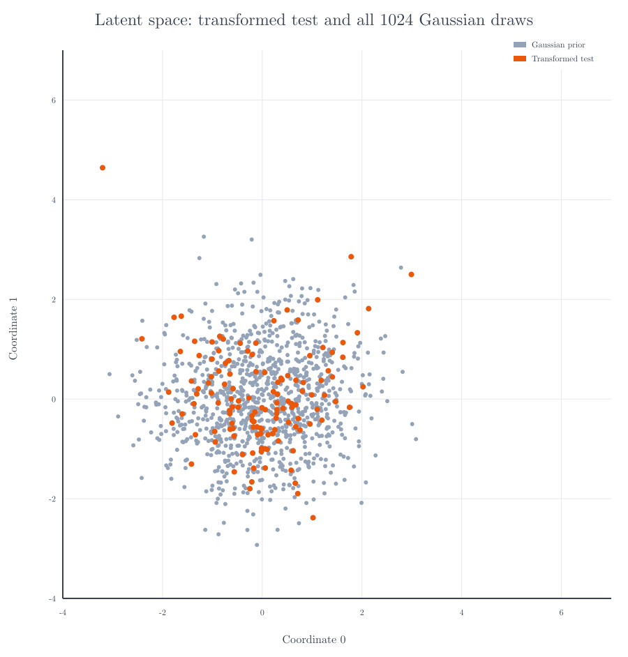
Compare integrated traces with actual discrete-map determinants
The paired panels retain both values for all 128 forward test inputs and all 1,024 supplied inverse prior inputs. The inverse determinant comes from its own reverse-RK4 path. Forward integrated logdet varies from −.178570285 to −.103130668; it is not just a global scalar. Actual discrete Jacobians have positive determinants on all these retained inputs. The signed residual plot includes every forward and inverse difference, including the largest negative inverse error; bounds retain every row. These are numerical-error checks for this fitted field and step count, not a general invertibility guarantee for arbitrary stiff discrete RK4 configurations.
#include <dm/dm.hpp>
int main(){
namespace n=dm::nn;std::map<std::string,n::Tensor> data,out,samples,v;
for(auto& [k,x]:n::load_npz("build/cnf_density/data.npz"))data[k]=x;
for(auto& [k,x]:n::load_npz("build/cnf_density/outputs.npz"))out[k]=x;
for(auto& [k,x]:n::load_npz("build/cnf_density/samples.npz"))samples[k]=x;
for(auto& [k,x]:n::load_npz("build/cnf_density/plot_values.npz"))v[k]=x;
auto panel=[&](const n::Tensor& points,const n::Tensor& analytic,const n::Tensor& actual,const char* title,const char* xlabel){
auto x=n::select(points,1,0).to_vector<double>();auto p=dm::graphics::RPlot::create();
p.points(x,analytic.to_vector<double>(),"Integrated trace",{37,99,235},3)
.points(x,actual.to_vector<double>(),"Actual RK4 Jacobian",{234,88,12},1)
.margins(72,22,54,64).y_limits(-.4,.7).x_label(xlabel).y_label("Log absolute determinant, nats").title(title);return p;};
dm::graphics::RLayout::create(1,2)
.add(panel(data.at("test_points"),out.at("forward_logdet"),v.at("actual_logdet"),"Forward: all128 test rows","Observed x0"))
.add(panel(samples.at("prior"),samples.at("inverse_logdet"),v.at("inverse_actual_logdet"),"Inverse: all1024 prior rows","Supplied latent z0"))
.size(1100,500).fit_panels().save_svg("build/cnf_volume.svg");
}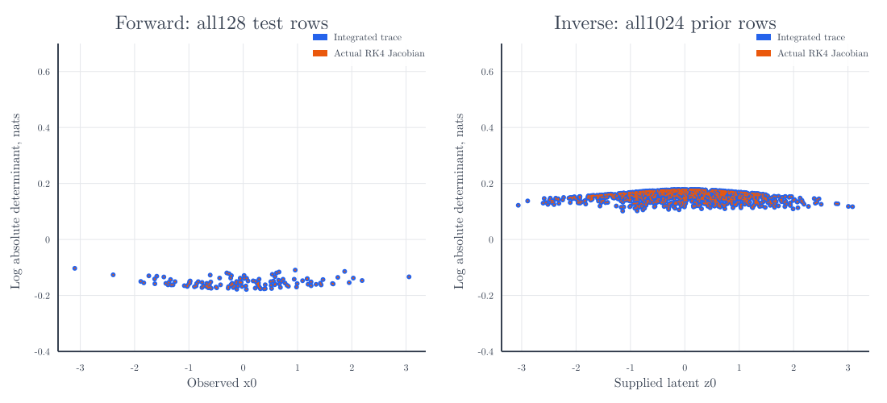
#include <dm/dm.hpp>
int main(){
namespace n=dm::nn;std::map<std::string,n::Tensor> v,o,samples;
for(auto& [k,x]:n::load_npz("build/cnf_density/plot_values.npz"))v[k]=x;
for(auto& [k,x]:n::load_npz("build/cnf_density/outputs.npz"))o[k]=x;
for(auto& [k,x]:n::load_npz("build/cnf_density/samples.npz"))samples[k]=x;
auto a=(v.at("actual_logdet")-n::cast(o.at("forward_logdet"),n::DType::Float64))*1e7,b=(v.at("inverse_actual_logdet")-n::cast(samples.at("inverse_logdet"),n::DType::Float64))*1e7;
auto p=dm::graphics::RPlot::create();p.points(n::arange(0,128).to_vector<double>(),a.to_vector<double>(),"Forward, all128 test rows",{37,99,235},3)
.points(n::arange(0,1024).to_vector<double>(),b.to_vector<double>(),"Inverse, all1024 prior rows",{234,88,12},2)
.y_limits(-14,18).x_label("Row index in its own pool").y_label("(Actual logdet - integrated trace) x 1e7")
.title("Discrete RK4 logdet differs slightly from integrated trace")
.save_svg("build/cnf_jacobians.svg");
}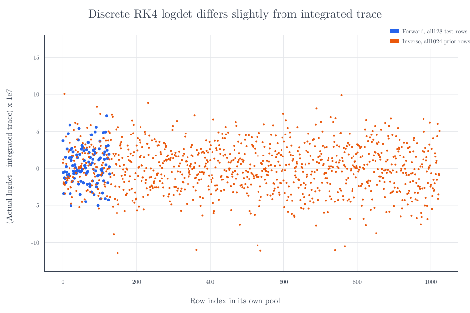
Retain the numerical change-of-variables residual
For every supplied z the diagnostic is numerical_log_p(inverse_RK4(z))+reverse_integrated_logdet−log phi(z). An exact continuous flow would make this zero; finite forward/reverse RK4 and Float32 calculations leave residuals. The source also uses a Float32-rounded log(2pi) in its model likelihood, while the final identity reference is computed in Double. Every residual and both coordinate roundtrips are retained below. This per-sample identity check is not an independent density integral.
#include <dm/dm.hpp>
int main(){
namespace n=dm::nn;std::map<std::string,n::Tensor> v;
for(auto& [k,x]:n::load_npz("build/cnf_density/plot_values.npz"))v[k]=x;
auto error=v.at("normalization_error");
dm::graphics::RPlot::create().points(n::arange(0,1024).to_vector<double>(),(error*1e6).to_vector<double>(),"All prior rows",{37,99,235},2)
.y_limits(0,5).x_label("Original prior row index").y_label("Absolute identity residual x 1e6, nats")
.title("Every source sample retains its numerical log identity")
.save_svg("build/cnf_normalization.svg");
std::print("| Numerical RK4 / Float32 check | Maximum absolute error |\n|---|---:|\n| inverse(forward(test)) |{:.12g}|\n| forward(inverse(prior)) |{:.12g}|\n| Change-of-variables log identity |{:.12g}|\n",n::max(v.at("forward_roundtrip_absolute_error")).item(),n::max(v.at("inverse_roundtrip_absolute_error")).item(),n::max(error).item());
}| Numerical RK4 / Float32 check | Maximum absolute error |
|---|---|
| inverse(forward(test)) | 2.38418579102e-07 |
| forward(inverse(prior)) | 2.38418579102e-07 |
| Change-of-variables log identity | 1.04312126314e-06 |
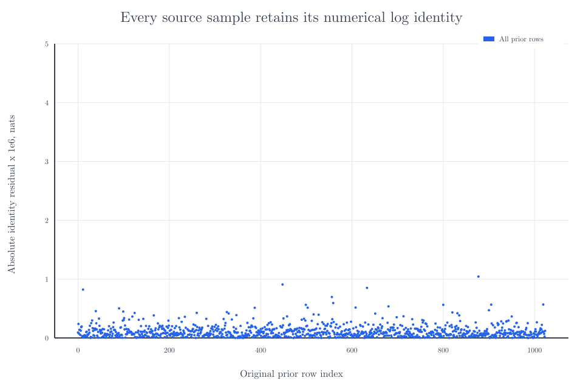
Interpret the checks at their actual scope
The original 21 archives / 163,073 values and 144 update captures / 5,040 values are reproduced exactly, including field Jacobians, all cumulative quarter traces, every optimizer write, batch/history TSV, protocol and non-timing metric. Independent NumPy calculations use manual field/RK4 pullbacks and analytic matrix composition, with all 52 fitting coordinates, all 52 inverse coordinates, 200 field parameter-mode coordinates and all saved samples checked. They call no native helper, external autodiff or refit and use no substitute data.
The continuous model motivates the trace integral, while finite RK4 defines the actually computed map. The report keeps those roles distinct, exposes the source Float32 time/coefficient policy and its refinement floor, and reserves likelihood interpretation for exact/paired trace modes. The experiment remains one short, fixed-seed two-dimensional fit, with a tiny full-Gaussian gain and a diagonal-Gaussian shortfall. No adaptive solver, continuous-adjoint, exact finite-map density, seed search, test-selected checkpoint or broad generative benchmark claim is introduced.